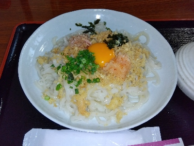
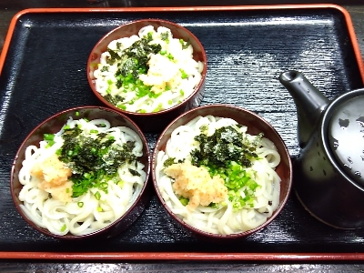

一合の特製うどん（冷）。
2024/07/27

生卵があるので玉子味が強くなりますね。
以前と味や食感が違うなと思いながら食べていましたが、タレを追加したら麺のツルツル感やうどんのうまみが増して美味しくなりました。
タレの量って重要ですね。タレはちょっと余るくらいの量をかけた方が美味しいと思いました。
カリカリした揚げ玉が多く入っていたので、お腹いっぱいで満足な気分になって帰りました。
島根県出雲市西林木町37-3
2024/07/27

生卵があるので玉子味が強くなりますね。
以前と味や食感が違うなと思いながら食べていましたが、タレを追加したら麺のツルツル感やうどんのうまみが増して美味しくなりました。
タレの量って重要ですね。タレはちょっと余るくらいの量をかけた方が美味しいと思いました。
カリカリした揚げ玉が多く入っていたので、お腹いっぱいで満足な気分になって帰りました。
2024/02/11

割子蕎麦は名物でありますが、割子うどんって初めて見たので注文しました。
割子蕎麦の麺がうどんに変わっただけです。蕎麦じゃないので違和感があるかなと思いましたが、ここのうどんにとっても合っていていました。紅葉おろしがよく効いていて、辛味があって美味しいうどんでした。
他にも色々メニューがあったので、それらも食べてみたいと思いました。
2009/05/05
西林木にあるうどんそばの店「一合」に行きました。周りは田んぼが多くあり、のどかな場所でした。
うどんを食べたんですが、細麺で腰が強く、ツルツルとした食感でした。最近は太麺のお店が多いですが、よそのお店とは違う感じがして良かったです。
細麺は食べやすいですね。腰が強いので食感も良かったですし、ツルツルっとした口当たりも良かったです。これから気温が温かくなってきたら、ざるうどんが美味しいんじゃないかと思いました。